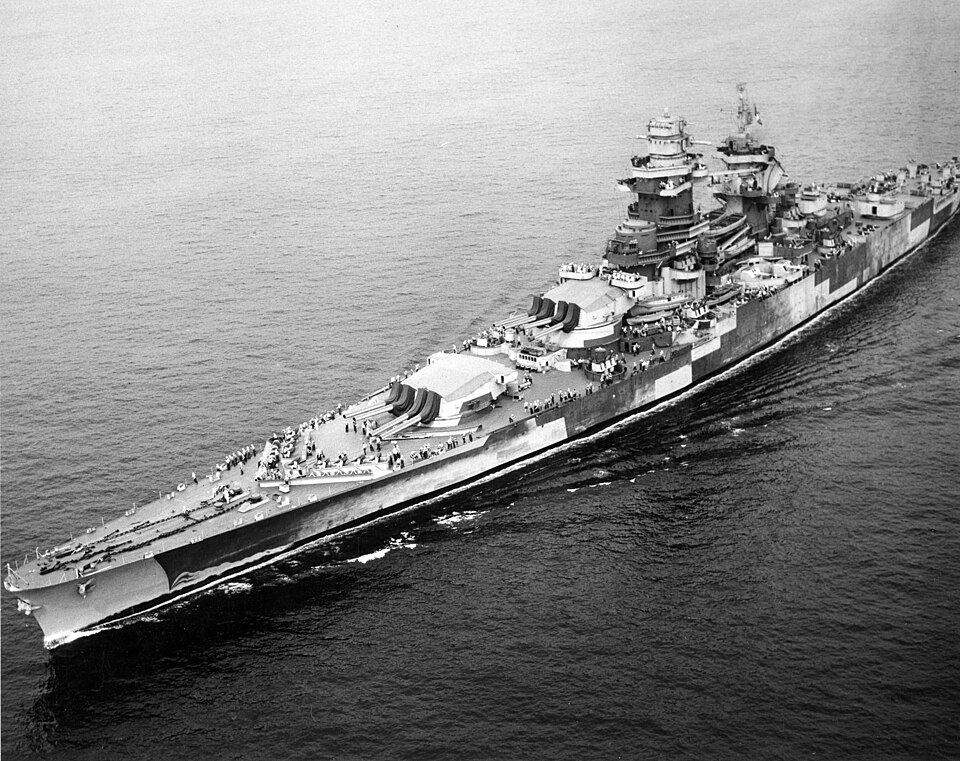

Richelieu
Acorazado de Francia, perteneciente a la clase Richelieu. Escapó a Dakar durante la derrota francesa de 1940 y sufrió ataques británicos.

Diseño y función
Richelieu pertenecía a la clase Richelieu. Acorazado rápido para operaciones de flota. Sus prestaciones se detallan en la tabla técnica, con las fechas o condiciones disponibles en la referencia.
Operaciones y trayectoria
Escapó a Dakar durante la derrota francesa de 1940 y sufrió ataques británicos. Tras incorporarse al esfuerzo aliado fue modernizado en Estados Unidos y operó con fuerzas británicas en el Índico.
Destino final y conservación
Sirvió en la posguerra y fue retirado y desguazado en la década de 1960.